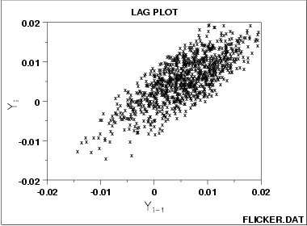

|
1.
Exploratory Data Analysis
1.3. EDA Techniques 1.3.3. Graphical Techniques: Alphabetic 1.3.3.15. Lag Plot
|
|||
| Lag Plot |  | ||
| Conclusions |
We can make the conclusions based on the above plot.
|
||
| Discussion |
In the plot above for lag = 1, note how the points tend to cluster
(albeit noisily) along the diagonal. Such clustering
is the lag plot signature of moderate autocorrelation.
If the process were completely random, knowledge of a current observation (say Yi-1 = 0) would yield virtually no knowledge about the next observation Yi. If the process has moderate autocorrelation, as above, and if Yi-1 = 0, then the range of possible values for Yi is seen to be restricted to a smaller range (.01 to +.01). This suggests prediction is possible using an autoregressive model. |
||
| Recommended Next Step |
Estimate the parameters for the autoregressive model:
The residual standard deviation for the autoregressive model will be much smaller than the residual standard deviation for the default model
|
||